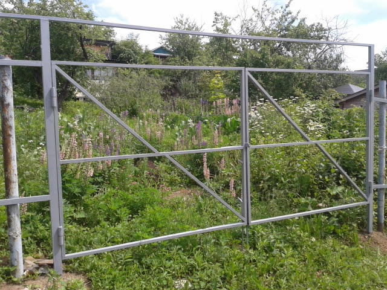

Услуги и цены
Изготовление и установка заборов, калиток и ворот
цена(с учётом материала) изделие материал от 700 п/м
каркас 2-е лаги - Каркас: 40 х 20
- Стойки: 60 х 40
- Профлист крашеный С-8
от 1200 п/м
каркас + профлист 2-е лаги 10 000
ворота - Каркас: 40 х 40
- Стойки: 60 х 60
- Самодельная задвижка и два штыря в землю
- Верхняя перемычка 60 х 40
13 500
ворота + калитка 5 000
калитка (без ворот) Монтаж
Покраска грунтом в один слой. Стойки ворот устанавливаются ниже глубины промерзания и бетонируются
Изготовление и монтаж козырьков и навесов
Изготовление и монтаж лестниц
Прочие металлические конструкции
Мелкий и крупный ремонт и прочие работы с использованиев электро-дуговой сварки
- К мелкому ремонту относятся работы которые можно провести без отдельного монтожа/демонтажа изделия.
Либо если монтаж/демонтаж изделия не затруднительно, а ремонт не требует длительной подготовки
и дополнительных работ.
К примеру это проварка лопнувших соединений, усиление соединений сварным швом. Установка дополнительных косынок, раскосов, рёбр жёсткости на слабые металлоконструкции. Так же учитывается объём проводимых работ.
- Крупный ремонт связан с проведением монтажно-демонтажных работ.
Либо это сложные работы с применением дополнительных сил и инструментов.
- К мелкому ремонту относятся работы которые можно провести без отдельного монтожа/демонтажа изделия.
Либо если монтаж/демонтаж изделия не затруднительно, а ремонт не требует длительной подготовки
и дополнительных работ.